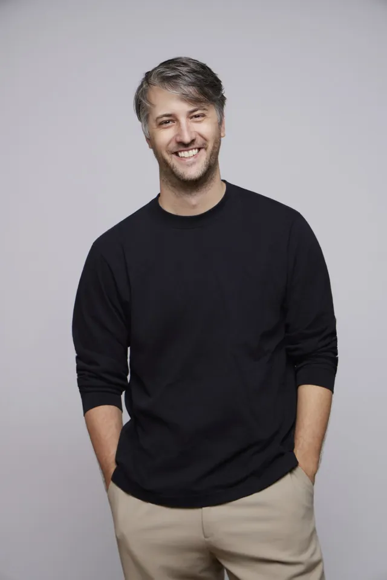

Bio
Misch Strotz is co-founder and CEO of letz.ai and neon internet, CTO at habiata, and Vice-President of PULSE, the Luxembourg Startup Association. Misch works on enabling AI for creative professionals and writes about tech and media trends.
Photos

Logo
Use it in black or white only, on a plain background, with some room around it. Please don't stretch, recolour or redraw it.
Names
- Misch Strotz. @mitch0z on X, @mitchoz on Instagram and LinkedIn.
- LetzAI, LETZ.AI or letz.ai.
- neon internet, all lowercase.
- habiata, all lowercase.
- PULSE, the Luxembourg Startup Association.
Usage
Free to use for articles, interviews, podcasts, and event or speaker announcements featuring Misch Strotz.
Questions, interviews or higher resolutions: misch@msh.lu.